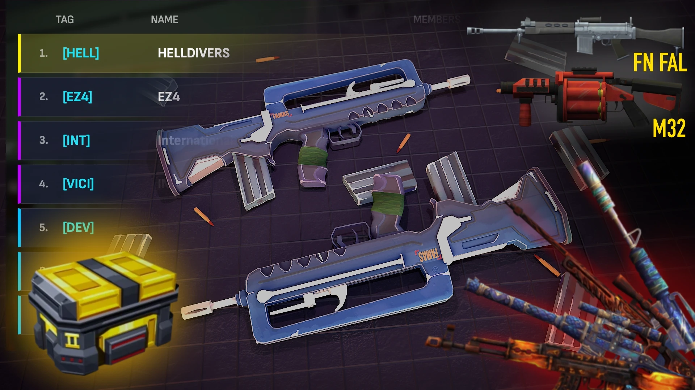
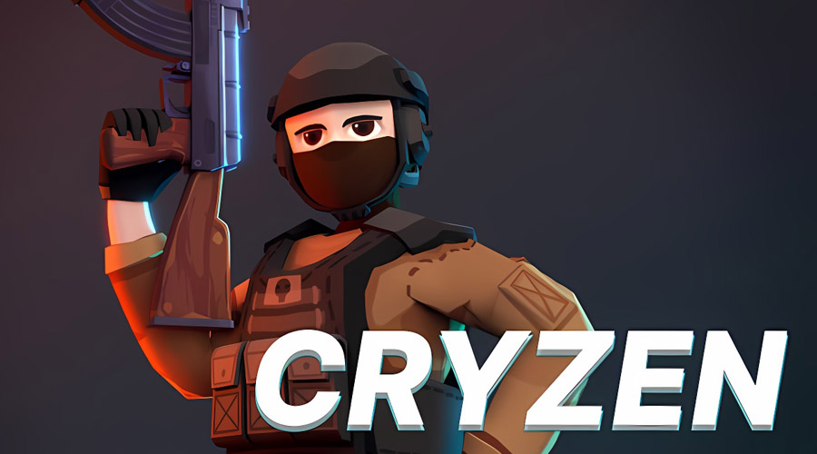
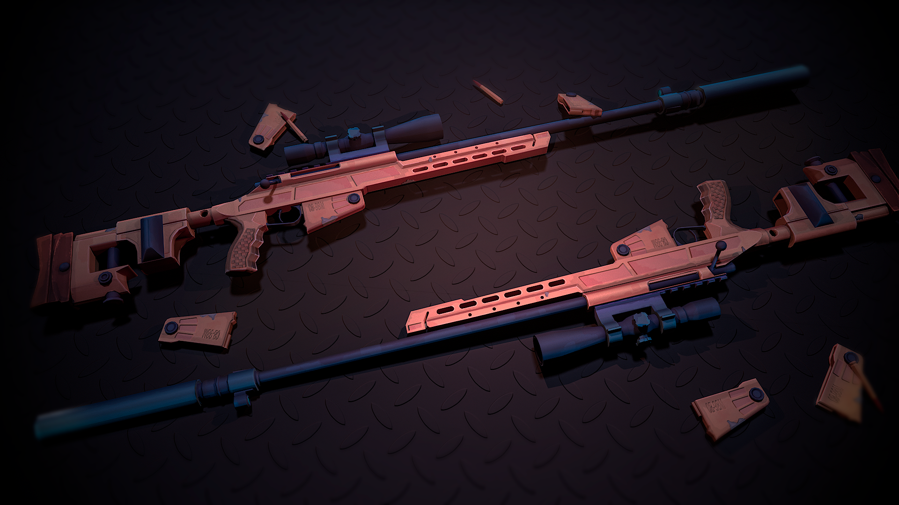

The Hard Truth About Your Cryzen.io Runs
You keep dying in the spawn hallway. Again. I have over 2000 hours in Cryzen.io, and I watch new players make the exact same fatal errors every single day. You think this is just another generic browser shooter where you can run and gun blindly. You are wrong. Cryzen.io punishes sloppy movement and blind aggression instantly. The arena is small, the time-to-kill is fast, and your opponents are already holding the angles you are too lazy to check. If you want to stop being cannon fodder and actually dominate the Deathmatch leaderboards, you need to stop playing like a rookie. Read this guide. Fix your habits. Or keep feeding the enemy team.

| # | Mistake | Quick Fix |
|---|---|---|
| 1 | You Reload in the Open | Never reload your weapon unless you are safely behind hard cover |
| 2 | You Ignore Map Positioning in Team Deathmatch | Stick with at least one teammate at all times during Team Deathmatch |
| 3 | You Over-Commit to Sneaking | Use normal movement to rotate quickly and control the map effectively |
| 4 | You Stick to One Weapon Loadout | Analyze the map layout before the match starts |
| 5 | You Spray and Pray Instead of Aiming | Tap fire or burst fire at medium to long ranges |
You Reload in the Open
You empty your magazine during a chaotic firefight, panic, and hit the reload key while standing completely still in the middle of the map. You mistakenly think you have a safe window because you just secured a kill. You completely ignore the tactical movement mechanics that keep you alive. You stand there like a statue, waiting for the animation to finish, exposing yourself to every single angle on the map. This is a terrible habit that gets you killed instantly.
Cryzen.io is an incredibly fast-paced browser FPS where positioning is everything. The exact moment you stand still to reload, you become a completely stationary target. Enemy players spawn or push through your sightline immediately after you shoot. Because precise aiming is the absolute core of this game, a stationary player is just free target practice for the opponent. You hand them an easy kill, lose your hard-earned map control, and ultimately cost your team the entire round.
Never reload your weapon unless you are safely behind hard cover. If your gun clicks empty during a fight, immediately switch to your secondary weapon or strafe quickly behind a solid wall. Use the crouch and sneak mechanics to break your silhouette while reloading. Only reload when you have visually confirmed the immediate area is clear and your back is firmly against a solid map structure. Control your ammo, control your positioning, and stop dying for no reason.
You Ignore Map Positioning in Team Deathmatch
You treat Team Deathmatch exactly like a free-for-all Deathmatch mode. You push the enemy spawn completely alone, ignoring your squad, and try to rack up personal kills. You refuse to hold defensive angles or support your teammates, choosing instead to sprint blindly into the dangerous center of the arena. You think playing like a lone wolf makes you a hero, but you are actually just playing the exact wrong objective for this specific game mode and ruining the match.
Team Deathmatch requires your squad to push together, trade shots, and control the map collectively. When you isolate yourself, you get picked off one by one. The enemy team easily controls the center of the map, setting up devastating crossfires. You lose the objective because you are too busy chasing a personal kill streak. Your selfish play directly costs your team the match, as you fail to secure the numerical advantage needed to win the deathmatch and dominate the scoreboard.
Stick with at least one teammate at all times during Team Deathmatch. Push angles together and communicate your movements clearly. If your teammate is shooting, you should be shooting at the same target or covering their exposed flank. Hold defensive angles when your health is low and let your squad trade kills effectively. Map positioning and teamwork win Team Deathmatch, not individual heroics. Play the objective, trust your squad, and secure the victory together.

You Over-Commit to Sneaking
You abuse the sneak and crouch mechanics, moving at a glacial pace across the entire map. You genuinely think playing like a ghost makes you untouchable. You spend half the match creeping around the edges of the arena, completely ignoring the vital center control. You treat stealth as your primary mode of transportation instead of using it as a tactical tool, sacrificing your map presence and team utility just to avoid direct confrontations with the enemy team.
Cryzen.io is fundamentally about fast-paced battles and tactical movement. Sneaking is specifically designed for repositioning or holding a tight angle, not for traversing the entire map. When you sneak everywhere, you completely lose map control. The enemy team dominates the high-traffic zones, farms the center spawns, and dictates the pace of the match. You end up with a pathetic score because you are too scared to engage in the actual fight, rendering yourself completely useless to your team.
Use normal movement to rotate quickly and control the map effectively. Only use the sneak and crouch mechanics when you are actively holding an angle, repositioning for a flank, or recovering from a low-health state. Move with clear purpose. If you are not actively setting up a surprise attack or hiding from an enemy, walk at full speed to secure your territory. Aggressive movement secures the map, while passive sneaking loses it every single time.
You Stick to One Weapon Loadout
You find a weapon you like during your first few matches and lock it in permanently. You refuse to adapt your loadout based on the specific map or the enemy team's strategy. You bring the exact same gun to every single fight, completely ignoring the varying engagement distances. You think your favorite gun is the best in every situation, which is a massive rookie mistake in a game that demands tactical flexibility and smart weapon choices to survive.
Cryzen.io gives you room to customize your combat identity with different weapon choices for a very good reason. Maps feature vastly different engagement distances and sightlines. If you only use a close-range shotgun, you get shredded by snipers in open areas. If you only use a sniper rifle, you get run over in tight spawn hallways. Failing to adapt your weapon choice makes you a highly predictable, one-dimensional target that the enemy team can easily counter.
Analyze the map layout before the match starts. Equip a versatile primary weapon that handles mid-range fights, and carry a reliable secondary for close-quarters panic situations. If the enemy team is rushing you, switch to a high-fire-rate weapon. If they are holding long angles, equip a precision rifle. Adapt your loadout to actively counter their strategy. Flexibility with your weapon choices is what keeps you alive and dominating the scoreboard consistently.
You Spray and Pray Instead of Aiming
You see an enemy and just hold down the trigger, spraying bullets everywhere and hoping one connects. You rely entirely on luck rather than utilizing the precise aiming mechanics. You completely ignore recoil control and proper crosshair placement. You think moving your mouse wildly while holding the fire button will eventually secure a kill, but you are just wasting ammunition and revealing your exact position to everyone in the arena for absolutely no reason.
This is a game defined by precise aiming and tactical discipline. Weapons in Cryzen.io have distinct recoil patterns and bullet spread mechanics. When you spray blindly, your accuracy drops to zero after the first few shots. You waste your entire magazine, reveal your exact location, and fail to secure the kill. The enemy player simply side-steps your inaccurate spray and headshots you with a single, well-placed shot. You lose the duel every single time you do this.
Tap fire or burst fire at medium to long ranges. Keep your crosshair at head level before you even see the enemy. When you engage, aim deliberately for the head, not the feet. If you need to spray in close quarters, pull down to control the recoil pattern. Stop hoping for a lucky hit and start placing your shots with deliberate precision. Master the recoil, and you will master the arena and win your matches.

The Bottom Line
The number one thing that separates the absolute winners from the endless losers in Cryzen.io is map awareness combined with disciplined trigger control. You cannot just run and gun your way to the top of the leaderboard. You must control the angles, adapt your weapon loadouts, and respect the tactical movement mechanics. Stop feeding the enemy team with lazy habits. Fix your positioning, aim with purpose, and play the objective. Now get back into the arena and prove you actually belong on the scoreboard.